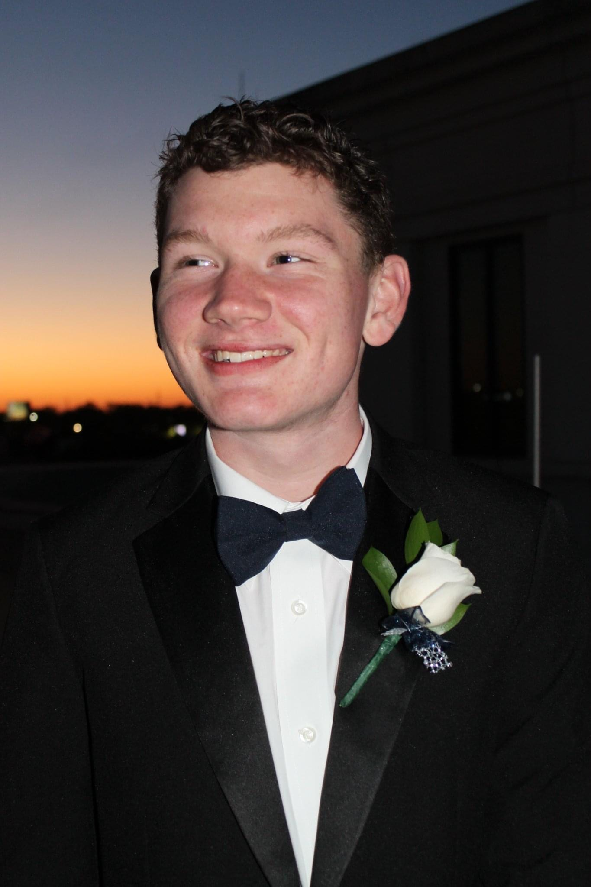

Nathan McKissick
About to author

I grew up in Gulfport, Mississippi in a family of 5.
Growing up, I was never the athletic type of kid. I was,
by all means, a nerd. I was the kid who played the violin
and took the ACT in the 8th grade to make a 24/36. All
this to say I was in no way someone involved in cycling.
This all changed towards the end of middle school. I entered
physical therapy in the beggining of middle school and when
I was leaving physical therapy at the end of middle school
they suggested taking up recreational cycling. This recreational
cycling led to my current love for the sport and even led me to
pursue the sport on the college level. I have recieved support
from a countless number of people throughout my journey
and wouldn't have made it without them.
In the same way people have been there to help me along my way,
I hope those reading this webpage can use the information found
here to better their understanding of collegiate cycling.